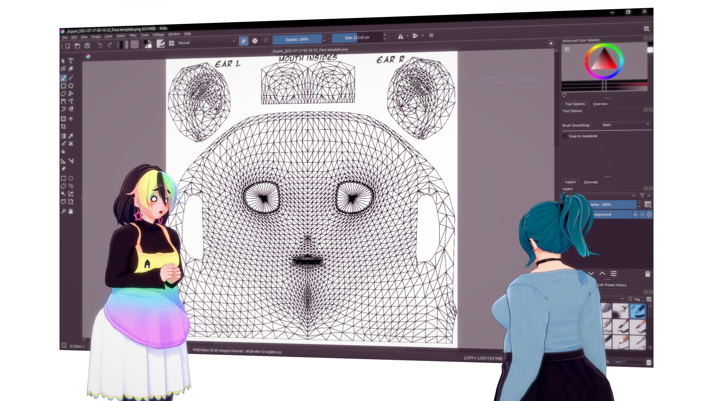

Koikatsu Overlays and Material Editor

Here is where you can grab my overlays or Material Editor materials. You are very welcome to edit these to fit you needs! In fact, most of these should have .psd files, which can be opened in many image editors beyond Photoshop.
To download, click on the image, and you should be able to download right away. save the archive to your UserData/Overlays or UserData/MaterialEditor directories.
Overlays
These are to be loaded with the KK_OverlayMods plugin.
Submissive and Breedable Top